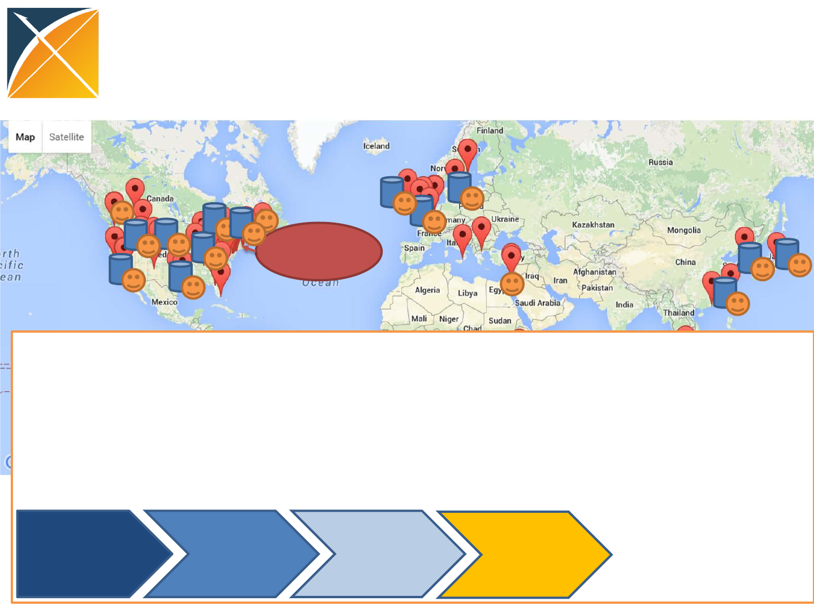
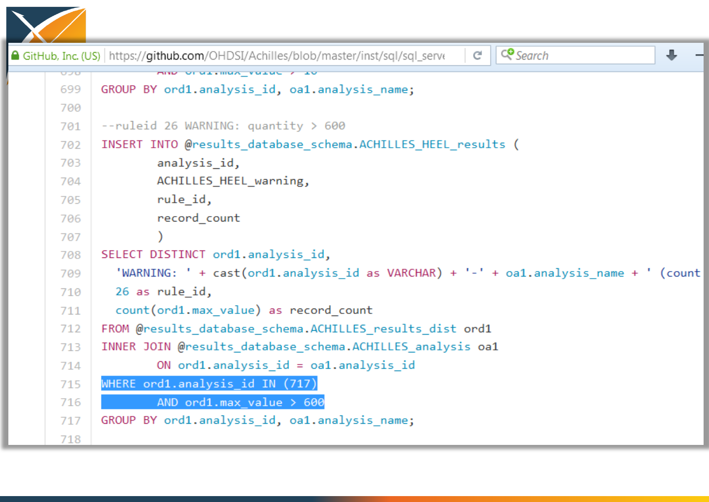
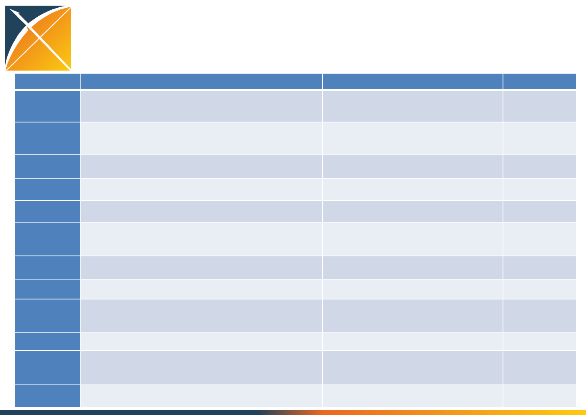
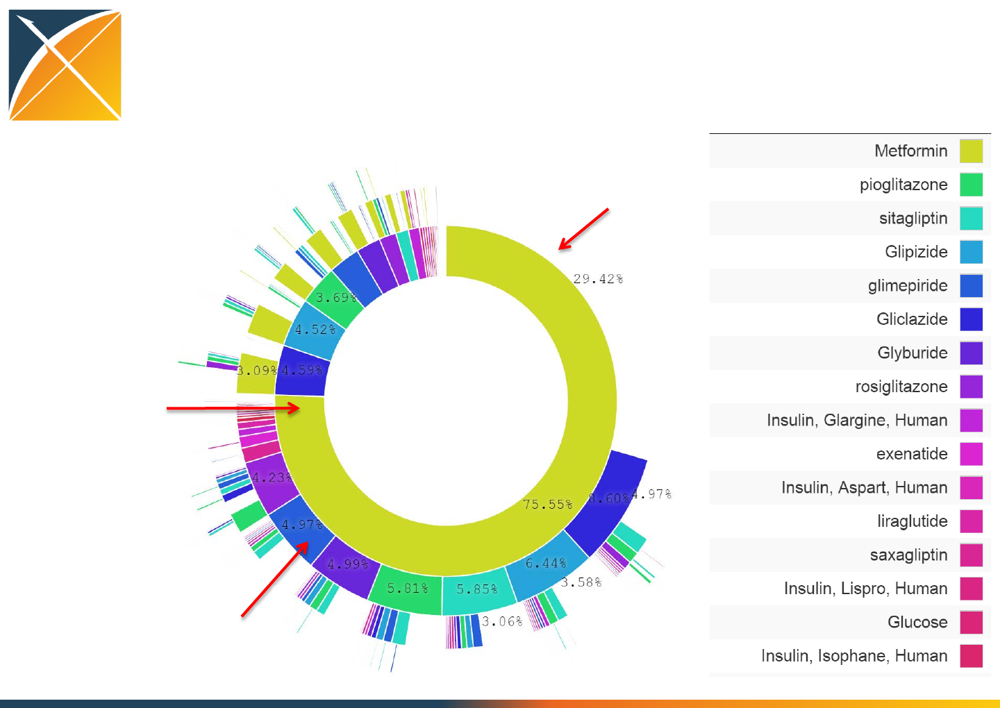

Observational Health Data
Sciences and Informatics
(OHDSI): A Rapidly Growing
International Network for Open
Science and Data Analytics in
Healthcare
Patrick Ryan, Vojtech Huser, Nigam Shah,
George Hripcsak, Jon Duke
24 March 2016
Introducing OHDSI
•The Observational Health Data Sciences and
Informatics (OHDSI) program is a multi-
stakeholder, interdisciplinary collaborative to
create open-source solutions that bring out
the value of observational health data through
large-scale analytics
•OHDSI has established an international
network of researchers and observational
health databases with a central coordinating
center housed at Columbia University
http://ohdsi.org

OHDSI’s mission
To improve health, by empowering a community
to collaboratively generate the evidence that
promotes better health decisions and better
care.
Methodological research
Open-source
analytics
development
Clinical applications
Observational
data management
Population-level
estimation
Patient-level
prediction
Clinical
characterization
OHDSI areas of focus
Vojtech:
ACHILLES
George:
TxPath
Jon:
PENELOPE
Nigam:
APHRODITE
OHDSI’s approach to open science
Open
source
software
Open
science
Enable users
to do
something
Generate
evidence
•Open science is about sharing the journey to evidence generation
•Open-source software can be part of the journey, but it’s not a final destination
•Open processes can enhance the journey through improved reproducibility of
research and expanded adoption of scientific best practices
Data + Analytics + Domain expertise
Standardizing workflows to enable
reproducible research
Open
science
Generate
evidence
Database
summary
Cohort
definition
Cohort
summary
Compare
cohorts
Exposure-
outcome
summary
Effect
estimation
&
calibration
Compare
databases
Defined inputs:
•Target exposure
•Comparator group
•Outcome
•Time-at-risk
•Model specification
Population-level estimation for comparative
effectiveness research:
Is <intervention X> better than <intervention Y>
in reducing the risk of <condition Z>?
Consistent outputs:
•analysis specifications for transparency and
reproducibility (protocol + source code)
•only aggregate summary statistics
(no patient-level data)
•model diagnostics to evaluate accuracy
•results as evidence to be disseminated
•static for reporting (e.g. via publication)
•interactive for exploration (e.g. via app)
Develop candidate
cohort definition
Release final cohort
definition
Review patient
profiles
Annotate sample of
patients
Explore cohort
summary
Evaluate impact of
inclusion criteria
Standardized cohort package:
•Cohort description
(human-readable text with full
specification)
•Cohort definition syntax
(computer-executable code
applicable to any CDM)
•Cohort instantiation
(dataset with qualified
subjects, start/end dates)
•Evaluation assessment from
case adjudication / testset
estimation
Standardizing workflows for cohort
definition
Estimate performance
with positive/
negative controls

OHDSI community in action
Coordinating
center:
CUMC
Data partner
Researcher
OHDSI Collaborators:
•>140 researchers in academia, industry, government, health systems
•>20 countries
•Multi-disciplinary expertise: epidemiology, statistics, medical
informatics, computer science, machine learning, clinical sciences
Databases converted to OMOP CDM within OHDSI Community:
•>50 databases
•>660 million patients
Ask clinical
question
Design
protocol
Develop
standardized
analytics
Generate
and
disseminate
evidence
Standardized process for network analyses:

Examples from the community across
the evidence generation continuum
•Data characterization and data quality
assessment: ACHILLES – Vojtech Huser
•Network studies in action: treatment
pathways – George Hripcsak
•Automated phenotyping: APHRODITE – Nigam
Shah
•Disseminating evidence into practice:
PENELOPE – Jon Duke

Data characterization and data
quality assessment: ACHILLES
Vojtech Huser MD PhD
National Institutes of Health

Content
•Why data quality
•Achilles and Achilles Heel
•What is new? (version 1.2; March 2016)
•Comparison study

Why Data Quality?
•Fitness for analysis, trust in outputs,
completeness of data
•Data transformation: Source -> Target
•Errors in data:
–Source error (typo in birth year; no pattern)
–ETL error (has pattern)
•Mapping error
•Common Data Models allows sharing of data
quality rules and creating of data quality tools
•Existence of data quality tools allows sites to
quickly implement a starter set of rules

Achilles Heel (your free data quality
tool)
•Achilles (step 1 of 2)
–Pre-computed measures (Achilles.sql)
•Achilles Heel (step 2 of 2)
–Data quality rules (AchillesHeel.sql)
•Achilles Web
–Web-based “data viewer”
•Paradigm:
Patient level data -> “something smaller”
(10B rows) (2M rows)


Non-SQL view
Step 1 Pre-computed analyses
Drug quantity by drug ID

What is new? (Achilles Heel v1.2; March
2016)
•Introduction of RULE_ID and rule overview CSV file
•Better reporting of “depth of the error” (number of
rows with a given error)
•Support for CDM v5
•Generalizability to other CDMs
–Separation of model-conformance rules from rules
examining “source” data (zombie events)
–Data measure vs. data quality measure; target model
terminology (RxNorm)
•More rules (contribute your favorite DQ rule); non-
Achilles efforts (IRIS)
Comparison Study
•7 sites; 24 datasets
•Achilles Heel output
Visualization example
OHDSI in action:
network studies
George Hripcsak, MD, MS
Biomedical Informatics,
Columbia University

OHDSI
•Driven by research, not infrastructure
•Vertically integrated initiative
–Research
–Policy development
–Data science methods
–Software engineering
–Data modeling
–Data holders
–Infrastructure

OHDSI Assets
•Geographic, national, and practice variation
•Sample size
•Community (interdisciplinary)
•Critical mass (terminology mappings)

OHDSI Network
•140 investigators from 14 countries
•60 databases and 600M records in total
–12 databases and 250M records on first study
•Community
–Weekly community meeting
–Workgroup meetings
–Web site
•Code base on Github
•Common data model and terminology

Research Goal
•Generate evidence
–Randomized trial is the gold standard
–Observational research seen as supporting

Observational Data & Clinical Trials
•Sample size calculations
–Do we have enough patients to carry out a trial?
•Recruitment
–Find patients or their clinicians from EHRs
•Pragmatic trials: recruitment and data collection
–ADAPTABLE aspirin trial
…
•Complementary causal evidence (future)
–New methods to handle confounding and ascertain
causes from retrospective observational databases

Characterization
•Today we carry out RCTs without clear knowledge
of actual practice
•There will be no RCTs without an observational
precursor
–It will be required to characterize a population using
large-scale observational data before designing an RCT
–Disease burden
–Actual treatment practice
–Time on therapy
–Course and complication rate
–Done now somewhat through literature and pilot
studies

Causation
Similar leaps:
•Observational associations -> Causes
•RCT-based causes -> Individual treatment
1. Study population -> Local population
•Characterization
2. Local population -> Individual
•Precision medicine
–Are the same causes operative, confounders, etc.
–That is, if deriving causes from observational data
is futuristic, then so is using RCT results
(Fuller 2015)

Treatment Pathways
•In literature
–Recommended sequence of treatments
•How are patients actually treated?
–Sequence of medications each patient took
Treatment Pathways
Public
Industry
Regulator
Academics RCT, Obs
Literature
Lay press
Social media
Guidelines
Formulary
Labels
Advertising Clinician
Patient
Family
Consultant
Indication
Feasibility
Cost
Preference
Local stakeholders
Global stakeholders Conduits
Inputs
Evidence

Treatment Pathways
•Defining a pathway
–What the clinician orders
–What prescriptions the patient fills
–What the patient takes
Network process
1. Join the collaborative
2. Propose a study to the open collaborative
3. Write protocol
–http://www.ohdsi.org/web/wiki/doku.php?id=research:studies
4. Code it, run it locally, debug it (minimize others’ work)
5. Publish it: https://github.com/ohdsi
6. Each node voluntarily executes on their CDM
7. Centrally share results
8. Collaboratively explore results and jointly publish
findings

OHDSI in action:
Chronic disease treatment pathways
•Conceived at AMIA
•Protocol written, code
written and tested at 2
sites
•Analysis submitted to
OHDSI network
•Results submitted for 7
databases
15Nov2014
30Nov2014
2Dec2014
5Dec2014

Condition definitions
Disease Medication classes Diagnosis Exclusions
Hypertension (“HTN”) antihypertensives, diuretics,
peripheral vasodilators, beta
blocking agents, calcium
channel blockers, agents acting
on the renin-angiotensin
system (all ATC)
hyperpiesis (SNOMED) pregnancy observations
(SNOMED)
Diabetes mellitus, Type 2
(“Diabetes”)
drugs used in diabetes (ATC),
diabetic therapy (FDB)
diabetes mellitus (SNOMED) pregnancy observations
(SNOMED), type 1 diabetes
mellitus (MedDRA)
Depression antidepressants (ATC),
antidepressants (FDB)
depressive disorder
(SNOMED)
pregnancy observations
(SNOMED), bipolar I disorder
(SNOMED), schizophrenia
(SNOMED)
Treatment pathway event flow
Protocol

OHDSI participating data partners
Code
Name
Description
Size (M)
AUSOM
Ajou University School of Medicine
South
Korea; inpatient hospital
EHR
2
CCAE
MarketScan Commercial Claims and
Encounters
US private
-payer claims
119
CPRD
UK Clinical Practice Research Datalink
UK;
EHR from general practice
11
CUMC
Columbia University Medical Center
US; inpatient EHR
4
GE
GE Centricity
US;
outpatient EHR
33
INPC
Regenstrief Institute, Indiana Network for
Patient Care
US;
integrated health exchange
15
JMDC
Japan Medical Data Center
Japan; private
-payer claims
3
MDCD
MarketScan Medicaid Multi-State
US; public
-payer claims
17
MDCR
MarketScan Medicare Supplemental and
Coordination of Benefits
US; private
and public-payer
claims
9
OPTUM
Optum ClinFormatics
US; private
-payer claims
40
STRIDE
Stanford Translational Research Integrated
Database Environment
US; inpatient
EHR
2
HKU
Hong Kong University
Hong Kong; EHR
1

Strict criteria
•250,000,000+ patient records to start
•4 years continuous observation
•(first treatment for disease)
•3 years continuous treatment
•327,110 type 2 diabetes mellitus
•1,182,792 hypertension
•264,841 depression
•Sequential and simultaneous are mixed

Publication in revision
•Submitted to PNAS
–Policy of open sharing pre-publication
–Will share more details on publication

T2DM : All databases
Treatment pathways for diabetes
First drug
Second drug
Only drug
Type 2 Diabetes Mellitus Hypertension Depression
OPTUM
GE
MDCD
CUMC
INPC
MDCR
CPRD
JMDC
CCAE
Population-level heterogeneity

Medication-use metrics
•Define generic metrics to be used on all
diseases
–Monotherapy: patients who used exactly one
medication in the three-year window (one at a
time and no changes)
–Monotherapy with common medication: patients
whose monotherapy was the most common
mono-med for that condition
–Start with common medication: patients who
started with the most common starting med for
that condition
Medication-use metrics by data source
Conclusions: Treatment pathways
•General progress toward more consistent
therapy over time and across locations
•Differ by country
•Differ by practice type
•Not differ so much by data type (claims, EHR)
•Differ by disease
–Even before guidelines published
–Disease differences and literature
•Huge proportion of unique pathways

Conclusions: Network research
•It is feasible to encode the world population in
a single data model
–Over 500,000,000 records by voluntary effort
(682,000,000)
•Generating evidence is feasible
•Stakeholders willing to share results
•Able to accommodate vast differences in
privacy and research regulation

Collaborators
George Hripcsak Columbia University Medical Center, New York, NY, USA
Patrick B Ryan Janssen Research & Development, LLC, Titusville, NJ, USA
Jon D Duke Regenstrief Institute, Indianapolis, IN, USA
Nigam H Shah Stanford University, CA, USA
Rae Woong Park Ajou University School of Medicine, Suwon, Republic of Korea
Vojtech Huser NIH Clinical Center, Bethesda, MD, USA
Marc A Suchard David Geffen School of Medicine, Uni. of California, Los Angeles, CA, USA
Martijn J Schuemie University of Hong Kong, Hong Kong; Janssen Research & Development, LLC, Titusville, NJ, USA
Frank DeFalco Janssen Research & Development, LLC, Titusville, NJ, USA
Adler Perotte Columbia University Medical Center, New York, NY, USA
Juan Banda Stanford University, CA, USA
Christian G Reich AstraZeneca PLC, Waltham, MA, USA
Lisa Schilling University of Colorado School of Medicine, Aurora, CO, USA
Michael Matheny Tennessee Valley Healthcare System VA, Nashville, TN, USA
Daniella Meeker University of Southern California, Los Angeles, CA
Nicole Pratt University of South Australia, Australia
David Madigan Columbia University, New York, NY, USA
Automated Learning of
Phenotype Models
Nigam Shah, MBBS, PhD
nigam@stanford.edu
250 million patients
Drug sequences and outcomes
Metf->Metf (n) = 377
Metf->Glip (n) = 32
http://greenbutton.stanford.edu
antihypertensives
Intervention
Diastolic pressure < 90 mm Hg
Outcome
A 55 year old female of Vietnamese heritage
with known asthma presents to her physician
with new onset moderate hypertension
My Patient
100
Diastolic BP with Drug A: 245
Diastolic BP with Drug B: 989
1 2 3 4 5 6
90
80
70
60
Mm Hg
months
Variables associated with Outcome
Drug A
Asthma
Ethnicity
HDL
3 4 0 1 2
HbA1c > 10%
Problem: A lot of medical care is
educated guesses
Opportunity: Decisions based on
what happened to people like you.
Goal
-Build phenotype models in 5
easy steps!
-Designed and Implemented
using OHDSI CDMv5 and
Vocabulary 5
Electronic Phenotyping
(1 )
Classifiers
Noisy labeling Consensus
definitions
Finding new
Phenotypes
Error rate in labeling Sample size
10 % 1.56 x
20 % 2.77 x
30 % 6.25 x
40 % 25 x
“noisy labeling” to create training data
Assumption: “long mention” is a reliable indicator of presence
tid cui str Note freq syn Medline freq % noun
2933 C0020255 hydrocephalus 29,634 NNS 19,541 64.61
42612 C0020255 hydrocephaly 113 NN 275 49.81
90773 C0020255 water on the brain 8 ROOT 1 50
XPRESS- EXtraction of Phenotypes from clinical Records using
Silver Standards
Input: config.R – with term search settings
Output: keywords.tsv and ignore.tsv
Input: getPatients.R -- config.R, keywords.tsv, ignore.tsv
Output: feature_vectors.Rda
Input: buildModel.R -- config.R, feature_vectors.Rda
Output: model.Rda
Phenotype AUC Sens. Spec. PPV
DM 0.95 91 % 83 % 83 %
MI 0.91 89 % 91 % 91 %
FH 0.90 76.5% 93.6% ~20%
Celiac 0.75 40 % 90 % ~4 %
MR#
✖ ✗ ✕ + ✜ ✜ ✓ ✓
Term to
Concept
Structured and
unstructured data
from a record is
represented as a
vector of features
Diabetes
Diabetes nos
Metformin
Dimethylbiguanidine
TERMS
Diabetes mellitus
Diabetes mellitus
Metformin
Metformin.
CONCEPTS ICD9: 250.00
ICD9: 790.2
CODES
MED: 6809
MED: 4815
PRESCRIPTIONS
LAB:HBA1c (High)
LAB:Blood Glucose: High
LAB:Blood Glucose: High
LAB:Blood Glucose: Normal
LABS
CONCEPT
FEATURES:
#Notes in which the
concept occurs at
least once
fc =
CODE
FEATURES:
Counts of a code
fco =
Total number of
codes
PRESCRIPTION
FEATURES:
Counts of a RxCUI
fp =
Total number of
RxCUIs
LAB
FEATURES:
Counts of a lab-result
fl =
Total number of lab-
results

Effort precision trade off
Acc PPV Time
0.98 0.96 1900
Acc PPV Time
0.90 0.91 2hr
Anchor and Learn
(with Yoni Halpern and David Sontag)
Cases Cont. Acc. Recall PPV
Myocardial Infarction (MI)
OMOP definition [2] 94 94 0.87 0.91 0.84
XPRESS [2] 94 94 0.89 0.93 0.86
APHRODITE 94 94 0.91 0.93 0.90
APHRODITE w Anchors
(features mod.) 94 94 0.93 0.96 0.91
Type 2 Diabetes Mellitus (T2DM)
PheKB definition [2] 152 152 0.92 0.88 0.96
XPRESS [2] 152 152 0.89 0.99 0.9
APHRODITE 152 152 0.91 0.98 0.88
APHRODITE w Anchors
(features mod.) 152 152 0.93 0.95 0.91

Current state
•APHRODITE 1.2 released on November 30th, 2015.
•Anchors incorporate on version 1.2 - November 30th,
2015.
•Fully Oracle/Postgres/MSSQL server compliant as of
version 1.1.
•6 sites have attempted building a model
–2 sites failed because of data in CMD v4 version issues.
–3 sites successfully finished all tests.
–1 site has successfully executed the Anchors code.
Acknowledgements
Group Members:
•Fellows: Suzanne Tamang, Yen Low, Alison
Callahan, Elsie Gyang, Juan Banda, Rainer
Winnenburg, Rohit Vashisht
•BMI Students: Ken Jung, Sarah Poole, Alejandro
Schuler, Albee Ling, Vibhu Agarwal, Tanya
Podchiyska, David Stark
•Med Students: Greg Gaskin, Jassi Pannu
Alums: Anna Bauer-Mehren (Roche), Srini Iyer
(Facebook), Amogh Vasekar (Citrix), Sandy Huang
(Berkeley), Paea LePendu (PCCI), Rave Harpaz
(Oracle), Sam Finlayson (Harvard), Will Chen (Yale)
Funding:
•NIH – NLM, NIGMS, NHGRI, NINDS, NIMH, NCI
•Stanford Internal – Dept. of Medicine, TRAM,
Population Health Sciences, Clinical Excellence
Research Center
•Fellowships – Med Scholars, Siebel Scholars
Foundation, Stanford Graduate Fellowship
•Industry – Apixio, CollabRx, Healogics, Janssen
R&D, Oracle, Baidu USA, Amgen
BMIR-IT: Alex Skrenchuk

Disseminating Evidence in Practice:
Enhancing Product Labeling
through OHDSI
Jon D. Duke MD, MS
Regenstrief Institute
Real-World Impact

How to take evidence
generated by the OHDSI
community and deliver to
end-users?
Drug
Safety
Information

Product Labels Have a Problem
While considered the official source of drug safety
information
–Labels are infrequently read by patient or providers
–The evidence for a given ADR is often scant
–They are one-size-fits-all and do not support
personalized decision-making

What if we could take real
product labels and inject
them with OHDSI evidence?
72
Adverse Reactions
~~~ ~~ ~~ ~~ ~~ ~~ ~~
~~ ~~~ ~~ ~ ~~ ~~~ ~~
~~~ ~~ ~~ ~~
~~~ ~~ ~~ ~~ ~~ ~~ ~~
~~ ~~~ ~~ ~ ~~ ~~~ ~~
~~~ ~~ ~~ ~~
~~~ ~~ ~~ ~~ ~~ ~~ ~~
~~ ~~~ ~~ ~ ~~ ~~~ ~~
~~~ ~~ ~~ ~~
~~~ ~~ ~~ ~~
Adverse Reactions
~~~ ~~ ~~ ~~ ~~ ~~
~~ ~~ ~~~ ~~ ~ ~~
~~~ ~~ ~~~ ~~
~~~ ~~ ~~ ~~ ~~ ~~
~~ ~~ ~~~ ~~ ~ ~~
~~~ ~~ ~~~ ~~
~~~ ~~ ~~ ~~ ~~ ~~
~~ ~~ ~~~ ~~ ~ ~~
~~~ ~~ ~~~ ~~
~~~ ~~ ~~ ~~
Adverse Reactions
~~~ ~~ ~~ ~~ ~~ ~~
~~ ~~ ~~~ ~~ ~ ~~
~~~ ~~ ~~~ ~~
~~~ ~~ ~~ ~~ ~~ ~~
~~ ~~ ~~~ ~~ ~ ~~
~~~ ~~ ~~~ ~~
~~~ ~~ ~~ ~~ ~~ ~~
~~ ~~ ~~~ ~~ ~ ~~
~~~ ~~ ~~~ ~~
~~~ ~~ ~~ ~~
Structured
Product Label
Enhanced
Product Label
Enter PENELOPE
Personalized
Exploratory
Navigation &
Evaluation
Of
Labels for
Product
Effects

PENELOPE
•PENELOPE leverages OHDSI’s evidence
generation and curation tools to provide
context to safety information on drug labels
•The nature of this context may differ for
different stakeholders (e.g., providers,
researchers, patients)
A Big Supporting Cast
ACHILLES:
Database
profiling
CIRCE:
Cohort
definition
HERACLES:
Cohort
characterization
HERMES:
Vocabulary
exploration LAERTES:
Drug-AE
evidence base
LAERTES
Drugs (RxNorm) Conditions
(SNOMED)
Spontaneous adverse
event data
(FAERS, VigiBase™,
ClinicalTrials.gov)
MedDRA
-> SNOMED
Freetext,
ATC
-> RxNorm
Literature
(PubMed, SemMed)
MeSH, UMLS
-> SNOMED
MeSH,
UMLS
-> RxNorm
Product labeling
(SPL, SPC)
Freetext ->
MedDRA®
-> SNOMED
SPL Set ID
-> RxNorm
Indications /
Contraindications
(FDB™)
ICD-9-CM
-> SNOMED
NDC/GenSeq
Num
-> RxNorm
Observational
healthcare data
(claims + EHR)
ICD-9-CM,
ICD-10
-> SNOMED
NDC/GPI/ATC
-> RxNorm
Drug
classifications
(ATC, NDF-RT)
Condition
classifications
(MedDRA®,
Ontology of
Adverse Events)
Source to Drug
Mapping
Source to HOI
Mapping
Evidence
Sources
Let’s Take a Look!
PENELOPE - it takes a community!
Anthony Sena
Janssen
Erica Voss
Janssen
Matt Levine
Columbia
Frank DeFalco
Janssen
Hamed Abedtash
Indiana U
Lee Evans
LTC Consulting
Rich Boyce
UPitt
Wen Zhang
UPitt
Patrick Ryan
Janssen

Join the journey
Interested in OHDSI?
Questions or comments?
79